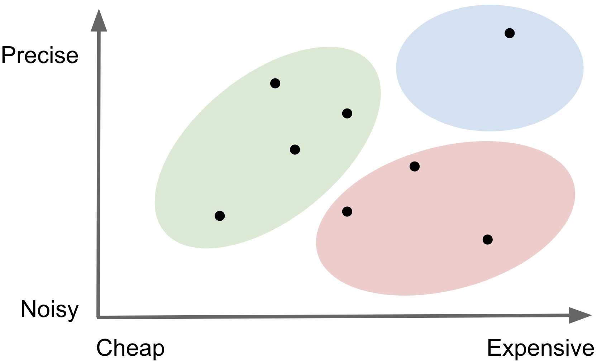
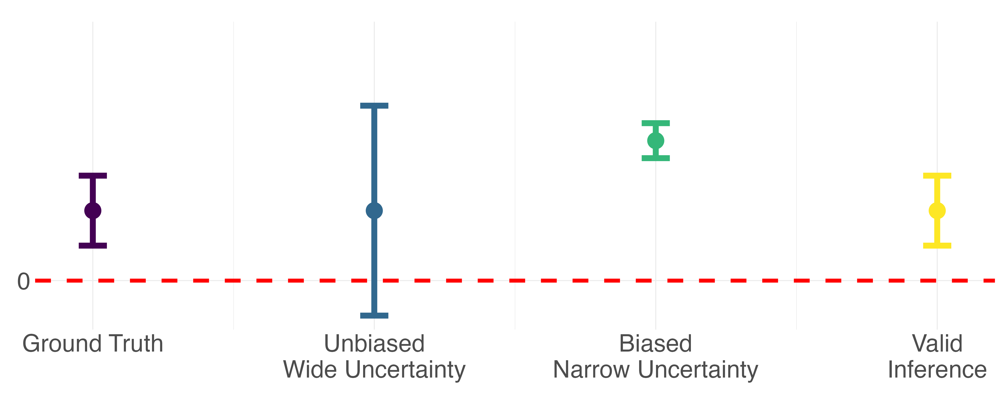

Explainer in progress. Please check back in a few weeks from now :)
What is "predicted data"?
In machine learning, "predicted data" are often thought of as the outputs from
some kind of complicated algorithm. I opt for an even broader definition:
any
indirect measure of a conceptual variable where a better, more direct measure exists.
This definition of course includes predictions from black-box machine learning or artificial
intelligence models like chatGPT, but also includes other examples we encounter often as social
scientists, like survey responses, interviews, imputations, statistical estimates, derived measures,
and a whole host of other proxies. Below are some examples I have come across in my own research.
Every conceptual variable comes with different measurement challenges, but in general, more precise
measurements are also more expensive to collect. A stylized image below shows that "ground truth"
direct measures
tend to live in the light blue region, with predicted data everywhere else. Because the best measures tend to be the most
expensive, we often end up relying on cheaper and noisier predicted data in practice. But not all predicted data
are created equal. The best are those depicted in the green region - relatively
precise and cheap compared
to the red region -
noisy and expensive.
Predicted vs Ground Truth Data
Measurements Vary in both Cost and Precision
| Variable |
Ground Truth |
Predicted |
| Cause of Death |
Vital Registration |
Verbal Autopsy |
| Obesity |
Fat Percentage |
BMI |
| Income |
Admin Data |
Self Reported |
| Environmental Attitude |
Questionnaire |
NLP Sentiment |

What does it mean if statistical inference on predicted data is invalid?
In this context, valid statistical inference refers to both
un-biased point estimates and
precise uncertainty bounds. Relative to inference performed with "ground truth"
outcomes, inference on predicted data may have biased point estimates due to systematic
differences between predictions and the ground truth, and the reported uncertainty will be
deceivingly narrow because it doesn't account for any of the prediction error.
Why does this matter? Consider a very simple hypothesis test where the p-value tells us whether
or not an observed relationship between X and y is statistically significant. This conclusion is
a function of both the point estimate and the uncertainty around that point estimate. Consider the stylized
diagram below which demonstrates how bias and conservative uncertainty might lead to very different
scientific conclusions.
Inference can have bias and/or misleading uncertainty

What is the intuition for how we correct this? *cite IPD lit*
IPD checklist - how do you identify if you (1) have an IPD problem & (2) have what you need to perform a correction?
Some examples? VA, BMI, etc.